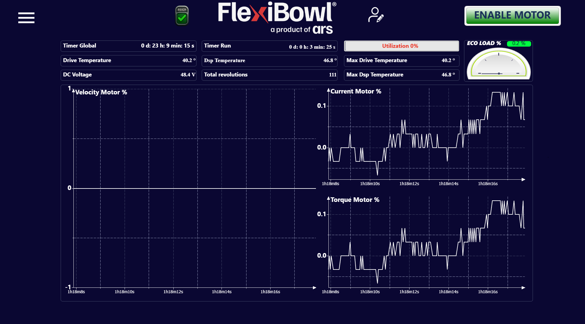

Graphs#
Panoramica#
La pagina Graphs fornisce una dashboard di monitoraggio in tempo reale delle grandezze elettriche e termiche del driver motore del FlexiBowl®. In questa pagina, l’operatore può verificare le prestazioni del sistema e rilevare eventuali anomalie durante il funzionamento.

Barra dei contatori e indicatori#
La parte superiore della pagina raccoglie i principali parametri di stato del sistema, suddivisi in tre colonne.
Colonna sinistra#
Campo |
Valore esempio |
Descrizione |
|---|---|---|
Timer Global |
0 d: 23 h: 9 min: 15 s |
Tempo totale di accensione del sistema dall’ultimo reset del contatore globale |
Drive Temperature |
40.2 °C |
Temperatura attuale del driver motore |
DC Voltage |
48.4 V |
Tensione del bus DC che alimenta il driver motore |
Colonna centrale#
Campo |
Valore esempio |
Descrizione |
|---|---|---|
Timer Run |
0 d: 0 h: 3 min: 25 s |
Tempo totale di funzionamento del motore (tempo effettivo di movimento) dall’ultimo reset |
Dsp Temperature |
46.8 °C |
Temperatura del processore DSP interno al driver |
Total Revolutions |
111 |
Numero totale di giri effettuati dal FlexiBowl® dall’ultimo reset del contatore |
Colonna destra#
Campo |
Valore esempio |
Descrizione |
|---|---|---|
Utilization |
0 % |
Percentuale di utilizzo corrente del motore rispetto alla capacità massima. Visualizzato in rosso se il valore supera una soglia critica |
Max Drive Temperature |
40.2 °C |
Temperatura massima raggiunta dal driver motore dall’ultimo reset |
Max Dsp Temperature |
46.8 °C |
Temperatura massima raggiunta dal DSP dall’ultimo reset |
ECO LOAD %#
Il tachimetro ECO LOAD % in alto a destra indica il carico medio del motore in percentuale. Il valore visualizzato nell’esempio è 0.2 %, indicando un carico estremamente ridotto — condizione tipica di sistema in standby o in movimento a velocità molto bassa.
Tip
Il valore ECO LOAD % è un indicatore utile per valutare l’efficienza operativa del sistema nel tempo. Valori costantemente elevati possono indicare un sovraccarico meccanico o parametri di velocità troppo aggressivi.
Grafici in tempo reale#
La parte inferiore della pagina mostra tre grafici a oscilloscopio che tracciano l’andamento nel tempo delle grandezze motore. L’asse orizzontale riporta il tempo trascorso dall’avvio, nel formato Xh Ym Zs.
Velocity Motor %#
Grafico della velocità del motore espressa in percentuale rispetto alla velocità massima.
Asse |
Descrizione |
|---|---|
Y |
Velocità normalizzata: da -1 (massima velocità antioraria) a +1 (massima velocità oraria). Il valore 0 corrisponde al motore fermo |
X |
Tempo di esecuzione |
Note
Un valore di velocità negativo indica rotazione in senso antiorario; un valore positivo indica rotazione in senso orario. Questo è coerente con il parametro Speed nella pagina Jog Motor.
Current Motor %#
Grafico della corrente assorbita dal motore espressa in percentuale rispetto alla corrente massima nominale.
Asse |
Descrizione |
|---|---|
Y |
Corrente normalizzata, tipicamente compresa tra 0.0 e valori positivi. I picchi corrispondono alle fasi di accelerazione e decelerazione |
X |
Tempo di esecuzione |
Tip
Picchi di corrente elevati e ricorrenti possono indicare rampe di accelerazione troppo aggressive. In tal caso, aumentare i valori di Acceleration e Deceleration per distribuire lo sforzo su un intervallo di tempo più lungo.
Torque Motor %#
Grafico della coppia erogata dal motore espressa in percentuale rispetto alla coppia massima nominale.
Asse |
Descrizione |
|---|---|
Y |
Coppia normalizzata, tipicamente compresa tra 0.0 e valori positivi. I picchi coincidono con le fasi di variazione del movimento |
X |
Tempo di esecuzione |
Note
I grafici Current Motor % e Torque Motor % mostrano tipicamente un andamento molto simile, poiché in un motore a corrente continua la coppia è direttamente proporzionale alla corrente. Differenze significative tra i due possono indicare anomalie nel driver.
Note di utilizzo#
Warning
Valori di Drive Temperature o Dsp Temperature costantemente superiori a 70 °C possono ridurre la vita utile del driver e causare arresti di protezione termica. Verificare le condizioni di ventilazione del cabinet e il ciclo di lavoro del sistema.
Warning
Un valore di DC Voltage fuori dal range nominale (tipicamente 48 V ± 10%) può indicare problemi all’alimentatore. Interrompere il funzionamento e contattare il servizio tecnico.